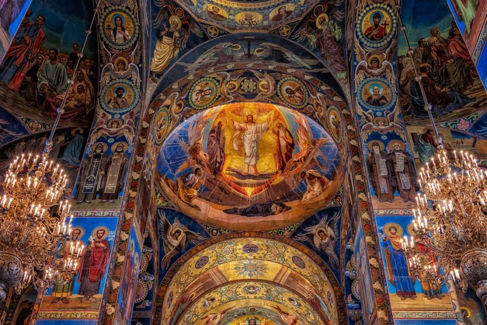
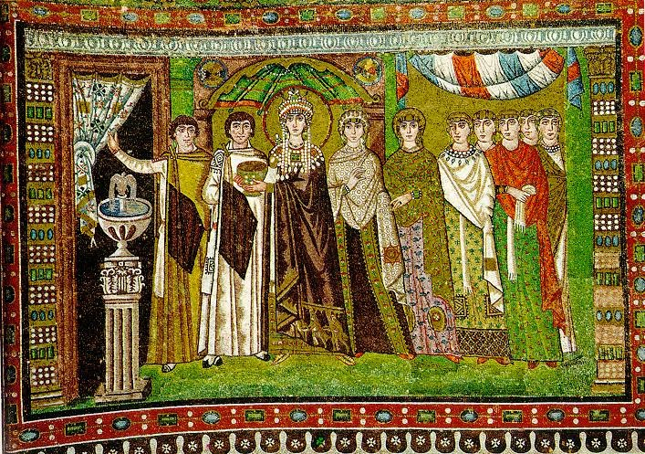

A arte bizantina é um estilo artístico ligado ao cristianismo, marcado pelo uso de cores vibrantes, fundo dourado e forte simbolismo espiritual.
Ela era utilizada principalmente em igrejas para representar figuras religiosas e transmitir mensagens visuais ao público.

O mosaico é uma técnica artística formada por pequenas peças chamadas tesselas, feitas de vidro, pedra ou cerâmica.
Essas peças são organizadas para formar imagens detalhadas e duráveis, sendo uma das principais técnicas utilizadas na arte bizantina.

Os mosaicos eram utilizados principalmente em igrejas para representar figuras religiosas e transmitir ensinamentos ao público.
Essa arte teve grande impacto na história, influenciando estilos europeus e sendo preservada até hoje como patrimônio cultural.
A arte bizantina reflete a espiritualidade da época, valorizando o simbólico ao invés do realismo.
Os mosaicos bizantinos são formados por pequenas peças chamadas tesselas, geralmente feitas de vidro, pedra ou cerâmica.
Muitas dessas peças possuíam ouro em sua composição, criando um efeito de brilho único, especialmente quando iluminadas dentro das igrejas.
Essa técnica permitia criar imagens duráveis e extremamente detalhadas, sendo uma das principais formas de arte do período.